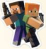

Minecraft Awards
Minecraft has won several awards over the years:
1.) Spike Video Game Awards (2011)
a.) Best Independent Game - Winner
b.) Best PC Game - Nominee
2.) Spike Video Game Awards (2011)
a.) Best Action/Adventure Game - Nominee
3.) NAVGTR Awards (2012)
a.) Game of the Year - Winner
4.) Kids' Choice Awards USA 2013
a.) Favorite App (Mojang AB 4J Studios) - Nominee
5.) Kid's Choice Awards USA 2014
a.) Favorite Video Game (4J Studios) - Nominee
6.) Kid's Choice Awards USA 2015
a.) Most Addicting Game (4J Studios) - Winner
7.) Game Developers Choice Award 2011
a.) Most Addicting Game (4J Studios) - Winner
b.) Best Downloadable Game (Markus Persson) - Winner
8.) BAFTA Games Awards 2013
a.) Best Family Game - Nominee
9.) BAFTA Games Awards 2014
a.) BAFTA Kids' Vote (Game) - Winner
10.) BAFTA Games Awards 2015
a.) Best Family Game (for console editions) - Winner
b.) Best Multiplayer (for console editions) - Nominee
11.) BAFTA Games Awards 2016
a.) BAFTA Kids' vote - Game - Winner
In 2014, Mojang and Minecraft intelectaly property were bought by Microsoft for US$2.5 billion. There have also been other spin-offs that were produced, like: Minecraft: Story Mode, Minecraft Dungeons, and Minecraft Earth.
Mojang also made annual Minecon conventions for Minecraft. Minecon 2015 has won a guinness world record for the biggest convention for a single video game, with about 10,000 tickets sold from 73 different countries. The game has also been used as an educational platform and environment to teach chemistry, computer-aided design, and computer science.